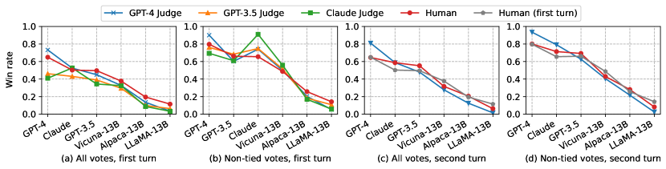

评估方法论
同一个模型，人工标注说它好，LLM-as-Judge 说它差，Arena 排名又不一样——这不是谁搞错了，而是每种方法都有自己的偏差。这一页拆解三类评估方法的偏差来源、置信区间和适用边界，帮你在"谁更可信"的问题上做出判断。
评估方法不是"哪个更准"的问题，而是"哪个的偏差我能接受"的问题。人工标注贵但准、LLM-as-Judge 快但有偏好、Arena 规模大但用户群体偏——三者各有盲区，交叉使用才是正解。
贵但准"] B["LLM-as-Judge
快但有偏好"] C["Arena 对战
规模大但用户偏"] end subgraph 偏差["核心偏差来源"] A --> DA["标注者一致性
Kappa 系数"] B --> DB["位置偏差
冗长偏差
自我偏好"] C --> DC["用户群体偏差
Elo 置信区间宽"] end DA --> R["无单一方法可信赖
交叉验证是唯一出路"] DB --> R DC --> R style A fill:#dcefc8,stroke:#4a7318 style B fill:#e6f1fb,stroke:#185fa5 style C fill:#fef3c7,stroke:#f59e0b style R fill:#fef2f2,stroke:#dc2626
三种评估方法的定位
选模型时最常见的问题：A 模型在 MMLU 上比 B 高 5 分，但用户实际反馈 B 更好用。这不是矛盾——MMLU 测的是知识储备，用户感受的是交互质量。基准告诉你"模型在某个分布上的表现"，而评估方法决定"这个表现怎么量化"。
| 方法 | 原理 | 优势 | 核心缺陷 | 成本 |
|---|---|---|---|---|
| 人工标注 | 人类标注员按 rubric 打分 | 最接近真实偏好 | 标注者不一致、主观偏差 | 高（$/条） |
| LLM-as-Judge | 用强模型给被评模型打分 | 快、便宜、可大规模 | 位置偏差、自我偏好 | 低 |
| Arena 对战 | 用户盲选两个模型的回答 | 真实用户、规模大 | 用户群体偏、Elo 噪声大 | 中（需流量） |
人工标注：金标准的裂痕
人工标注被称为评估的"金标准"——因为人类的偏好就是模型优化的最终目标。但金标准也有裂痕，而且裂痕比想象中大。
标注者一致性
两个人看同一个回答，给分可能差一档甚至两档。这不是因为谁不专业，而是因为开放式回答的优劣本来就有主观性。衡量一致性的标准指标是 Cohen's Kappa（两人之间）和 Fleiss' Kappa（多人之间）：
其中 $p_o$ 是观察到的一致率，$p_e$ 是随机情况下的一致率。$\kappa = 1$ 表示完全一致，$\kappa = 0$ 表示和随机猜一样。在 LLM 评估中，开放式问答的 $\kappa$ 通常在 0.4-0.7 之间——也就是说两个标注员对同一个回答的评价有 30-60% 的概率不一致。
| Kappa 范围 | 一致性水平 | 在 LLM 评估中的含义 |
|---|---|---|
| < 0.2 | 几乎没有 | 标注方案有根本问题 |
| 0.2 - 0.4 | 较低 | rubric 不够清晰或任务太难 |
| 0.4 - 0.6 | 中等 | 开放式问答的常见水平 |
| 0.6 - 0.8 | 较好 | 有明确 rubric 的结构化任务 |
| > 0.8 | 几乎一致 | 二分类或有标准答案的任务 |
展开：手算一次 Cohen's Kappa
公式 $\kappa = (p_o - p_e)/(1 - p_e)$ 里，$p_o$ 是"观察到的一致率"，$p_e$ 是"随机情况下的一致率"。光看公式难有体感，算一遍就清楚。假设两位标注员各自把 100 条回答标成"好/差"：两人都标"好"的有 35 条，都标"差"的有 35 条，即一致了 70 条，所以 $p_o = 0.70$。但标注不是瞎猜——标注员 A 整体偏宽（60 条"好"），标注员 B 稍微偏严（55 条"好"）。即使两人完全随机标，也会因为"碰巧都爱标好"而有一定比例的一致，这个"碰巧一致"的概率就是 $p_e$：$p_e = 0.60 \times 0.55 + 0.40 \times 0.45 = 0.33 + 0.18 = 0.51$。
代入公式：$\kappa = (0.70 - 0.51)/(1 - 0.51) = 0.19 / 0.49 \approx 0.39$。对照前面的表格，0.39 落在"较低到中等"区间——两位标注员表面一致率七成，扣掉"碰巧一致"后，真正的一致性不到四成。
这个算例揭示了 Kappa 的一个关键性质：它惩罚"边缘分布偏斜"。如果两位标注员都倾向标"好"，$p_e$ 变大，Kappa 就被压低——所以 Kappa 低不一定代表标注质量差，可能只是标注员之间对"好回答的先验分布"有系统性共识。报告 Kappa 时建议同时给出 $p_o$ 和 $p_e$，否则看不出是"真不一致"还是"分布偏斜导致的低值"。
标注者偏差
即使 Kappa 很高，也不代表标注是"正确"的——可能只是标注员们达成了相同的偏差。常见的标注者偏差包括：
- 冗长偏好：标注员倾向于给更长的回答打高分，即使长回答内容空洞。这和 LLM-as-Judge 的冗长偏差同源——因为标注员也是人，人天然觉得"说得多=说得好"。
- 格式偏好：排版整齐、有列表和加粗的回答更容易得高分，即使内容质量相当。
- 首个/最近效应：标注一批回答时，前几条和最后几条更容易受心情和疲劳影响。
- 群体偏差：标注员群体的教育背景、文化、价值观会影响"什么回答是好回答"的判断。一个全由美国大学生做的标注集，和中国用户的偏好可能有系统性差异。
LLM-as-Judge：自动化的幻觉
用 GPT-4 或 Claude 给其他模型打分，是 2024 年以来最流行的评估方式。它快、便宜、可以打几千条不需要休息。但它不是无偏的——它有自己的系统性偏好，如果不纠正，会把所有评估引向同一个方向。
偏好第一个回答"] B2["冗长偏差
偏好更长的回答"] B3["自我偏好
偏好同族模型的回答"] B4["格式偏差
偏好结构化排版"] end subgraph 缓解["缓解手段"] S1["交换位置取平均"] S2["控制回答长度"] S3["多 Judge 交叉"] S4["rubric 锚定"] end B1 --> S1 B2 --> S2 B3 --> S3 B4 --> S4 style B1 fill:#fef2f2,stroke:#dc2626 style B2 fill:#fef2f2,stroke:#dc2626 style B3 fill:#fef2f2,stroke:#dc2626 style B4 fill:#fef2f2,stroke:#dc2626 style S1 fill:#dcefc8,stroke:#4a7318 style S2 fill:#dcefc8,stroke:#4a7318 style S3 fill:#dcefc8,stroke:#4a7318 style S4 fill:#dcefc8,stroke:#4a7318
位置偏差
当 Judge 同时评估两个回答（A vs B），它会系统性地偏好放在前面的那个。这不是偶发现象——研究表明，交换 A 和 B 的位置，Judge 的判定可能翻转。缓解方法很简单：每对回答跑两次（AB 和 BA），取平均。但很多团队不做这一步，直接用单次结果。
冗长偏差
LLM Judge 倾向于给更长的回答打更高分——即使长回答只是把短回答用水话填充了一遍。这个偏差和人工标注者的冗长偏好同源，但 LLM 版本更严重，因为 LLM 对"看起来信息量大"的文本有更强的正面先验。缓解方法：在 rubric 中明确"简洁性"维度，或者控制回答长度差异。
自我偏好
这是最隐蔽也最危险的偏差：Judge 倾向于偏好和自己同族的模型。用 GPT-4 做 Judge，GPT 系列模型的得分会系统性偏高；用 Claude 做 Judge，Claude 系列得分偏高。这不是"故意偏袒"，而是模型对"和自己风格相似的文本"有天然的高分先验。
自我偏好不是猜想，而是有论文实证的现象。MT-Bench 论文报告过一张著名的图——六个模型在不同裁判（包括人类）下的平均胜率。这张图正是"裁判身份会改变排名"的直接证据，值得仔细读一遍。

读这张图先看坐标含义：横轴上是被评的六个模型（含 GPT-4、GPT-3.5、Claude 系列和几个开源模型，具体名单以论文原图为准），柱子高度是该模型在某位裁判那里的平均胜率，不同颜色的柱组对应不同裁判（人类、GPT-4、GPT-3.5、Claude 等）。图中最重要的观察是：同一批模型，换一个裁判，胜率排名整体变动——没有任何一条柱子的高度跨裁判保持不变。论文用它说明 LLM-as-Judge 的两个核心事实：其一，模型裁判与人类标注有可观的一致性（这是它被大规模使用的前提）；其二，裁判带有身份偏好——GPT 家族模型在 GPT-4 当裁判时更容易拿高分，其他家族的裁判同理。
工程含义很直接：单一裁判的排名结果不可直接采信，至少要两个不同厂商的裁判交叉打分。如果两套裁判给出的排名不一致，差异很可能来自裁判身份而不是模型能力的真实差距——这正是下一节"关键发现"的实践依据。
rubric 锚定
没有明确 rubric 的 LLM-as-Judge 等于"凭感觉打分"——感觉是最不可控的。好的 rubric 要做到：
- 维度拆分：不要给一个总分，拆成正确性、完整性、简洁性、安全性等独立维度分别打分。
- 锚点定义：每个分数档给一个参考样例——"3 分的回答长这样，5 分的回答长这样"。
- 先独立打分再比较：不要让 Judge 同时看两个回答比较——先各自独立打分，再比分数。这样能减少位置偏差的影响。
Arena 对战与 Elo 评分
Chatbot Arena 是目前规模最大的真实用户评估平台：用户输入一个问题，两个匿名模型同时回答，用户盲选更好的一个。这些对战结果用 Elo 评分（和国际象棋一样）算出排名。
Bradley-Terry 模型与 Elo
Arena 的评分基于 Bradley-Terry 模型：模型 $i$ 击败模型 $j$ 的概率为：
其中 $R_i$ 和 $R_j$ 是两个模型的 Elo 分。每次对战结果更新双方的分数：赢家加分、输家减分，加减幅度取决于对战双方的分差——爆冷加分多，意料之中加分少。
置信区间：Elo 的隐藏问题
Arena 排行榜上，两个模型差 10 分到底意味着什么？答案是：可能什么都不意味着。Elo 分数的置信区间取决于对战次数——对战越多，区间越窄。一个对战了 5000 次的模型和一个对战了 500 次的模型，同样差 10 分，可信度完全不同。
Arena 排行榜会公布 95% 置信区间（通常用 bootstrap 方法计算）。实际看排名时要注意：
| 情况 | 分数差距 | 置信区间重叠 | 结论 |
|---|---|---|---|
| 明确胜出 | > 50 分 | 不重叠 | 差距可信 |
| 可能胜出 | 20-50 分 | 略有重叠 | 大概率更强，但有不确定性 |
| 无法区分 | < 20 分 | 大量重叠 | 统计上不显著 |
Arena 的用户群体偏差
Arena 的用户不是随机抽样的——他们是"会去 Chatbot Arena 网站的人"。这个群体偏向技术爱好者、原理与前沿主题和开发者，他们的提问偏好（更多技术问题、更少日常对话）和判断标准（更重视正确性、不太在意语气）不代表一般用户。
更微妙的是，Arena 的提问分布会随时间变化——某个话题火了，相关提问就多，而 Elo 评分受对战分布影响。这意味着Arena 排名不是绝对的能力排序，而是"在当前用户提问分布下的相对偏好排序"。
样本量与置信区间：跑多少次才算数
评估方法选定了，接着的问题是：评测集要多大，结论才可靠？这个问题比想象中更基础——很多团队用 20 条样本的评测集就能决定换不换模型，而 20 条样本的统计误差大得离谱。
用二项分布做近似：假设模型真实胜率是 70%，用 N 条独立样本评测，胜率的方差是 p(1-p)/N。当 N=100 时，标准差约为 sqrt(0.7×0.3/100) ≈ 4.6%，95% 置信区间约 ±9 个百分点。也就是说，一个"真实 70% 胜率"的模型，测 100 条可能得到 61% 到 79% 之间的任何一个数。如果两个模型的真实差距只有 5 个百分点，100 条样本根本分不出来。
要压缩误差，样本量按平方增长：想得到 ±2 个百分点的置信区间，需要 N ≈ 1.96² × 0.7 × 0.3 / 0.02² ≈ 2000 条样本。这就是为什么 Arena 的头部模型每版动辄上万场对战——不是小题大做，而是统计规律逼出来的。反过来说，一个只有 200 条样本的内部评测集，它的精确分数本身没有意义，只有"谁明显比谁强"这种粗粒度结论才可靠。
Arena 的 Elo 置信区间也用同样思路计算，只不过用 bootstrap 而不是闭式公式。做法是：从已有对战记录里有放回地抽样，重抽几千次，每次算一遍 Elo，最后取分布的分位数。这样即使不知道底层分布，也能得到排名的 95% 置信区间。Arena 排行榜上两个模型分差小于置信区间宽度时，统计学上就是"无法区分"，任何"排名第 5 vs 第 7"的解读都是过度推断。
展开：用 bootstrap 估算 Elo 置信区间
下面是一个最小实现。核心思想：把"对战记录"当成可重抽样的数据集，重抽几千次，每次重算 Elo 排名，最后取 2.5% 和 97.5% 分位数作为置信区间。
import random
from collections import defaultdict
def elo_update(ratings, winner, loser, k=32):
"""一次对战的 Elo 更新（示意）"""
w, l = ratings[winner], ratings[loser]
ew = 1 / (1 + 10 ** ((l - w) / 400))
el = 1 - ew
ratings[winner] = w + k * (1 - ew)
ratings[loser] = l + k * (0 - el)
return ratings
def bootstrap_elo(matches, n_boot=2000, n_models=8):
"""对战记录格式: [(winner, loser), ...]
重采样 n_boot 次，返回每个模型的 Elo 分布。
"""
samples = defaultdict(list)
for _ in range(n_boot):
boot = [random.choice(matches) for _ in range(len(matches))]
ratings = {f"m{i}": 1000 for i in range(n_models)}
for winner, loser in boot:
ratings = elo_update(ratings, winner, loser)
for name, score in ratings.items():
samples[name].append(score)
return samples # 每个模型是一个长度 n_boot 的列表
# 对每个模型取 [2.5%, 97.5%] 分位数即得 95% 置信区间
# 分位数重叠说明两个模型统计上无法区分注意：真实 Arena 实现会更复杂（考虑 tie、时间衰减、提问分布差异等），但 bootstrap 重采样的思路完全一致——置信区间宽度与对战量的平方根成反比，对战越少，区间越宽。
评估成本核算：三种方法的真实开销
评估方法的选择不只是精度问题，也是预算问题。用数字算一笔账，能帮你理解为什么不同团队选了不同方法——不是他们不知道某种方法更好，而是成本约束不同。
先看人工标注。专业标注员的时薪折合下来，标注一条开放回答大约需要 0.5-2 美元，取决于任务难度和 rubic 粒度。一个 200 条的评测集，只算标注费用就是 100-400 美元；如果要求多人标注、多轮校验，还要再乘 2-3 倍。这是"贵但准"的代价——但它也是唯一能对齐"真实用户偏好"的方法。
再看 LLM-as-Judge。以主流商用 API 的价格估算，评测一条包含 1000 个输入 token、500 个输出 token 的回答，成本大约 0.002-0.005 美元。同样的 200 条评测，花费不到 1 美元，是人工标注的几百分之一。省下来的钱可以用来加大样本量：同样的预算，人工只能测 200 条，LLM-as-Judge 可以测 5 万条，置信区间窄一个数量级。这就是 LLM-as-Judge 大规模普及的根本原因——不是因为它更准，而是因为它便宜到可以堆样本。
Arena 的成本又不同。它不直接花钱买标注，但需要持续吸引真实用户、维护服务稳定、处理恶意刷分。对一个要长期运营的团队，基础设施、运营和防作弊的人力成本，通常比一次性评测集更高。它换来的是海量真实偏好数据——样本量动辄十万级，置信区间是所有方法里最窄的。
把三种方法的相对成本画成一张饼图（示意值，非精确报价），趋势一目了然：
把成本、精度和样本量放在一起看，推荐组合就非常清晰了：用 LLM-as-Judge 做大样本初筛（便宜、堆量、找明显差异），用人工标注做小样本精排（贵、准、验证初筛结论），用 Arena 或线上反馈做上线后的持续验证（真实用户、规模最大）。这个三层结构既能控制预算，又能规避单一方法的偏差——这也是前面"交叉验证"原则在预算约束下的落地形态。实践中，初筛的召回比精排更重要：初筛宁可多漏报几个候选、也不要漏掉真正的好模型，因为精排阶段还有机会修正；反过来，初筛误报的候选进了精排，只是浪费少量标注预算，不会造成根本性伤害。
偏差来源汇总：该信谁
把三种方法的偏差来源放在一起看，会发现一个模式：每种方法都有自己的盲区，而且盲区不重叠。这正是交叉验证有价值的根本原因。
| 偏差类型 | 人工标注 | LLM-as-Judge | Arena |
|---|---|---|---|
| 位置偏差 | 较小 | 严重 | 无（盲选） |
| 冗长偏差 | 有 | 更严重 | 有 |
| 群体偏差 | 有 | 有（Judge 厂商） | 有 |
| 自我偏好 | 无 | 严重 | 无 |
| 样本量不足 | 严重 | 较小 | 较小 |
| rubric 依赖 | 高 | 高 | 低（凭感觉选） |
实际操作中的推荐组合：
- 选模型阶段：用 LLM-as-Judge 做大规模初筛（快、便宜），再用人工标注做小规模精排（准、贵）。两步结合兼顾效率和可信度。
- 上线阶段：以 Arena 或自有用户反馈为主——线上数据才是最终裁判。线上评估方法见 可观测性与全链路追踪。
- 持续监控：用固定评测集做回归（检测退化），用线上采样做前向（发现新问题）。记住：离线比模型，线上比昨天。
三个最常见的数字误读
理解评估方法之后，还要警惕解读数字时的三个惯性陷阱——它们和评估方法本身无关，却几乎每天都在发生。
陷阱一：拿不同评测协议的分数直接比较。模型 A 的 MMLU 88 分用的是 5-shot + CoT，模型 B 的 85 分用的是 0-shot 直接作答，这两个数字根本不能相减。评测协议（few-shot 次数、是否允许思考、解析方式）不同，分数就有系统性差异。比较的前提是协议完全一致——这就像体检报告，同样的血糖值在不同试剂标准下意义不同，必须先校准标准再读数。
陷阱二：把"显著性"当成"胜负"。很多团队看到一个基准上差 3 分就宣布换模型，却从不算置信区间。3 分的差异在 100 条样本上完全可能是噪声。正确姿势是先算置信区间，区间重叠就默认"无结论"，继续加样本或换评测集，而不是急着下结论。尤其要注意：LLM-as-Judge 的分数不是独立观测，同一 Judge 内部的打分相关性强，实际有效样本量远小于表面条数，置信区间被系统性低估。
陷阱三：混淆"相关"与"因果"。Arena 排名靠前的模型往往回答更长、格式更工整——这不代表"长回答导致高分"，可能只是两者都被"模型更强"这个共同原因驱动。评估里经常出现这类混淆：把冗长偏差的产物当成能力信号，把用户群体的提问偏好当成模型差距。判断因果的唯一办法是控制变量做实验——比如把两个回答等长后再让用户选，看偏好是否还在。
这里给一个可执行的对照实验模板：如果怀疑"回答长度影响评分"，就构造两组样本——第一组是原始回答对，第二组把较短的回答扩写成长度相当的版本，其余不变。两组的评分差就是长度因素贡献的量化。如果差异显著，说明评估结果里混入了冗长偏差，需要做长度校准后再下结论。类似的模板可以套用到格式、语气、emoji 使用等任何可疑因素上，把模糊的"感觉有偏差"变成可测量的"偏差有多大"。这种控制变量的思路，是评估工程师日常最核心的技能，比背任何公式都重要。
这三个陷阱有一个共同根因：评估数字被过度信任。分数是证据的一种，但它是"经过偏差塑造的证据"。一个负责任的评估流程，应该同时记录：用的什么方法、样本多大、置信区间多宽、有哪些已知偏差、有没有做交叉验证。看到一份只报分数、不报这些上下文的评测报告，正确的态度不是相信，而是追问。回到这一页的起点：评估的目标从来不是得到数字，而是得到对模型的可靠判断——数字只是判断的证据链中的一环，评估协议、样本设计、偏差分析共同构成了证据链的其余部分。把这三部分补齐，评估结论才经得起复现和质疑。
参考文献与延伸阅读
- Judging LLM-as-a-Judge with MT-Bench and Chatbot Arena — LLM-as-Judge 方法的奠基论文，系统分析了位置偏差和自我偏好 · arXiv:2306.05685
- Chatbot Arena: An Open Platform for Evaluating LLMs by Human Preference — Arena 对战平台与 Elo 评分方法的设计论文 · arXiv:2403.04132
- Length-Controlled AlpacaEval: A Simple Way to Debias Automatic Evaluators — 专门针对 LLM-as-Judge 冗长偏差的缓解方法 · arXiv:2404.04475
- Large Language Models are Not Fair Evaluators — 系统研究 LLM 裁判的公平性偏差（含自我偏好与位置偏差），可替代手工检索 · arXiv:2305.17926
- lm-eval-harness — EleutherAI 官方评测框架，MMLU 等主流基准的标准实现，跑分前先锁版本 · GitHub
- Hugging Face Open LLM Leaderboard — 社区常用的大模型公开榜（动态更新，注意看评测协议）· huggingface.co
要点速查
- 本质：没有无偏的评估方法，只有"偏差我知道并可控"的方法。交叉验证是唯一出路。
- 人工标注：金标准但有裂痕——开放式问答的 Kappa 通常 0.4-0.7，标注员间 30-60% 概率不一致。
- LLM-as-Judge：四大偏差——位置偏差（交换位置取平均）、冗长偏差（控制长度）、自我偏好（多 Judge 交叉）、格式偏差（rubric 锚定）。
- 自我偏好最危险：GPT-4 当 Judge 会偏好 GPT 系列，Claude 当 Judge 会偏好 Claude 系列。务必用不同厂商的 Judge 交叉打分。
- Arena Elo：差 <20 分且置信区间大量重叠时统计不显著——不要拿排名差 5 位说事。
- 用户群体偏差：Arena 用户偏向技术群体，不代表一般用户偏好。
- 实操：LLM-as-Judge 初筛 + 人工标注精排 + 线上反馈兜底。离线比模型，线上比昨天。